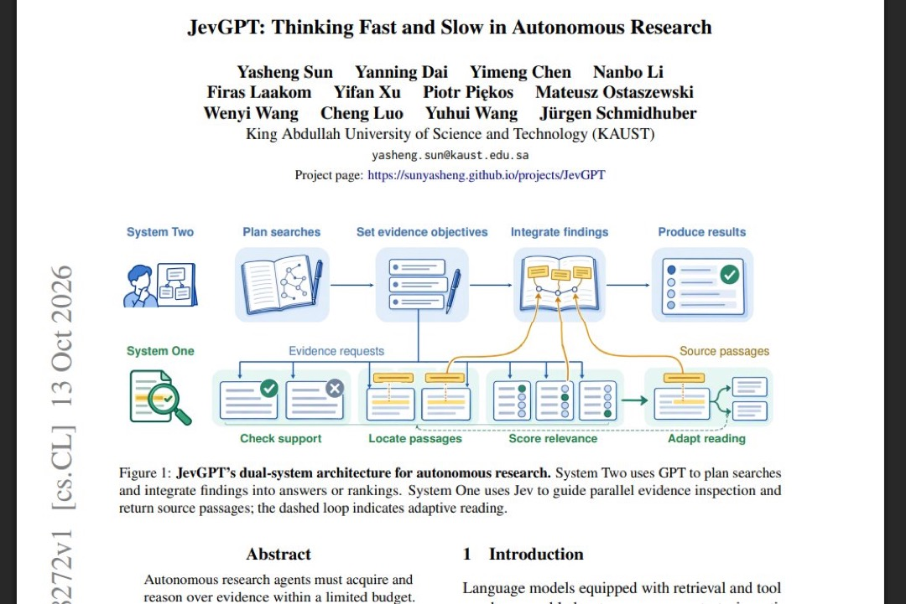
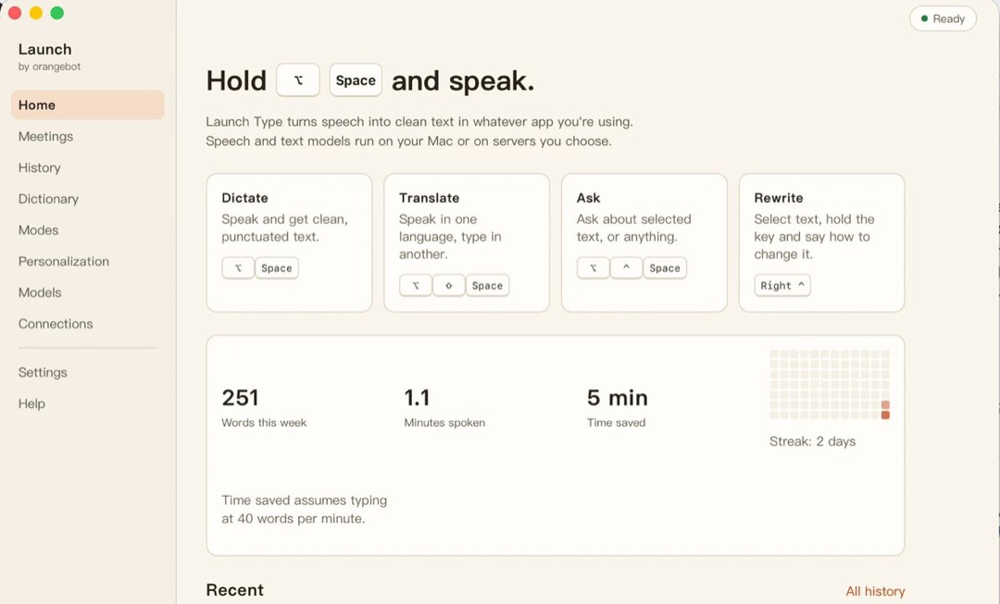
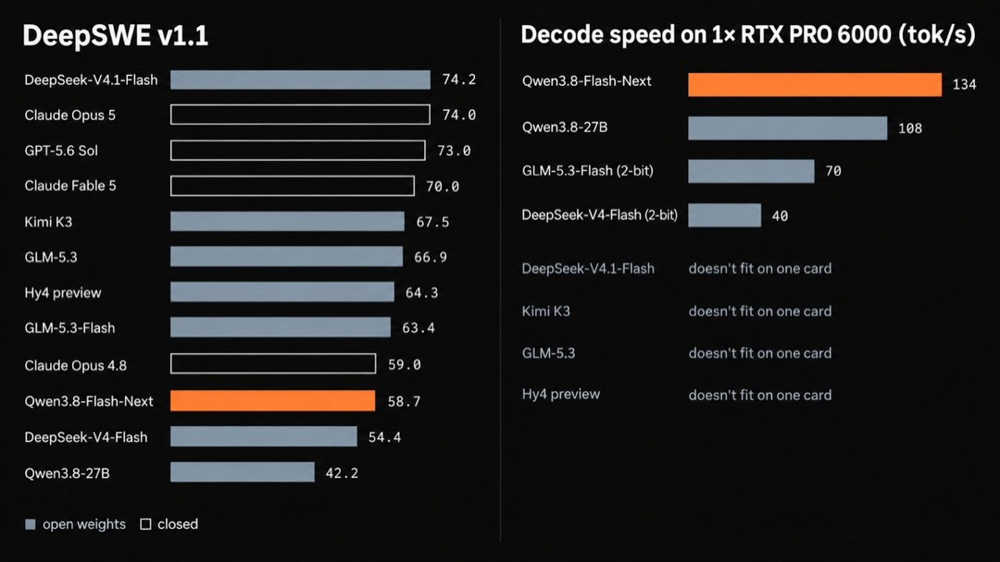
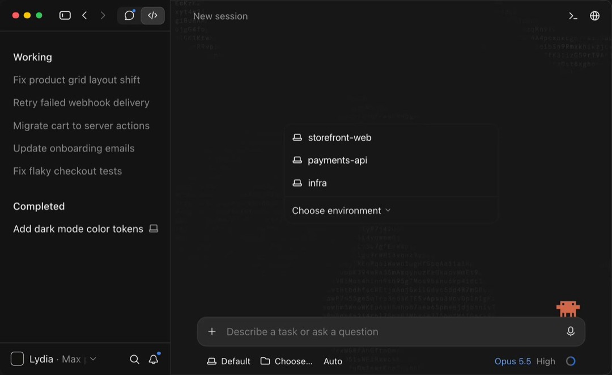
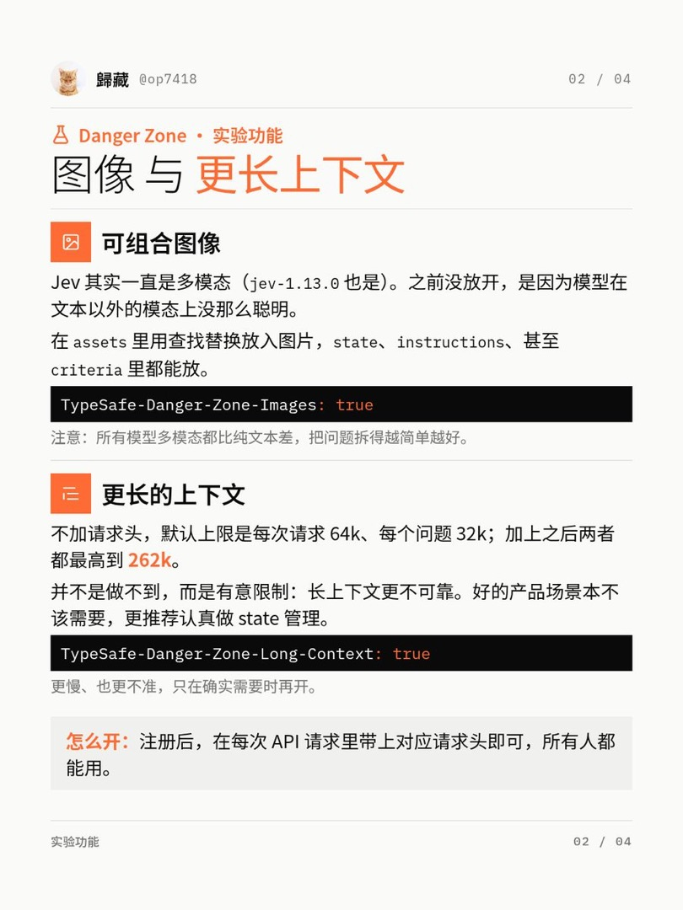
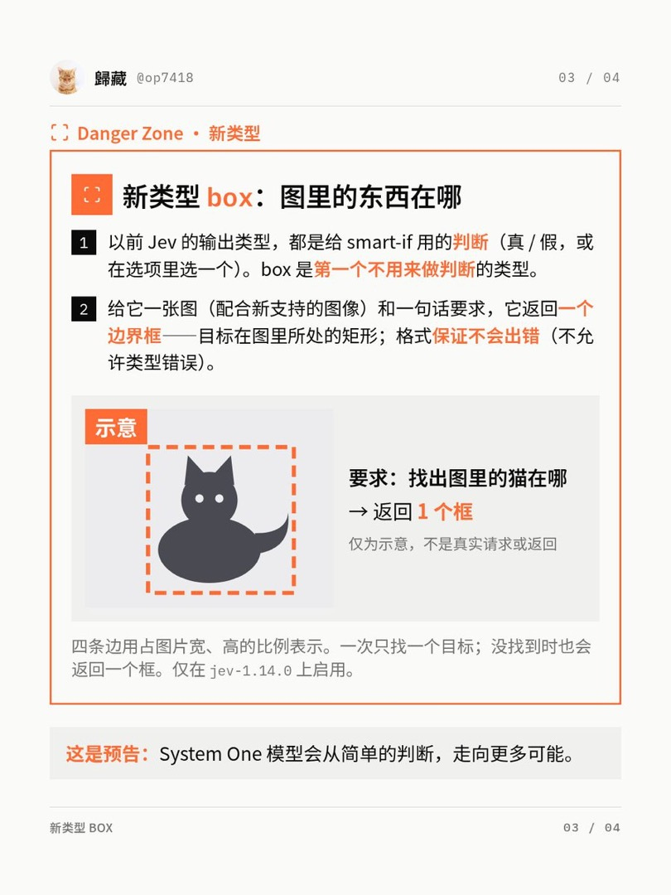
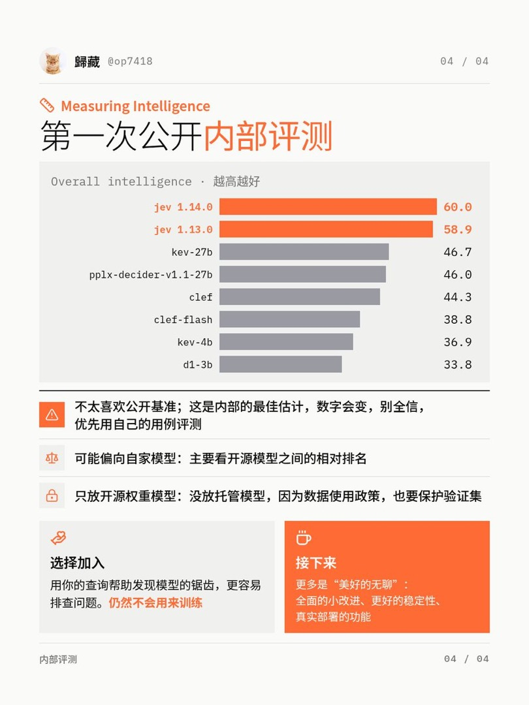

本期速览
01 JevGPT 快慢分工把研究成本砍半
02 Launch 本地模型手搓开源项目
06 Claude Code 桌面端并行提速
07 Databricks微调Qwen提速6倍
08 JEV 1.14新增多模态与262K上下文
01｜JevGPT 快慢分工把研究成本砍半
来源（X） · @snwiki238337 · 2026-10-15 08:22
**为了追求所谓的高召回和深度推理，模型越跑越慢、Token 越烧越多，但最终的结论却常常被大量噪音证据带偏。**
很多做 Agent 的团队都有同感：让一个大模型扛下所有事——既要做长程研究规划，又要一页页翻阅长篇文献、抠细节事实——本质上是在用极其昂贵的“慢思考”，去干大量本该靠“直觉与快速反应”完成的粗活。
结果就是：检索拿回来的材料浩如烟海，真正支撑核心论点的关键证据却往往未被仔细甄别；推理链路被拉得奇长，成本与延迟双双失控。
AI 领域的先驱 **Jürgen Schmidhuber** 团队最近发表的最新工作 **[JevGPT: Thinking Fast and Slow in Autonomous Research](https://arxiv.org/abs/2610.18272)**（[Hugging Face](https://huggingface.co/papers/2610.18272) ｜ [PDF 原文](https://arxiv.org/pdf/2610.18272)），给出了一个极具认知科学美感的解法：
**把卡尼曼的“快思考与慢思考（Thinking, Fast and Slow）”原则，彻底工程化进自主科研 Agent 的系统架构中。**
---
### 1. 架构本质：解耦“高层规划”与“局部证据初筛”
JevGPT 的核心思想很纯粹：不要让同一个重量级 Reasoner 去肉搏海量文档。它把科研任务拆解为了紧密协同的 **双系统（Dual-System）架构**：
* **System Two（慢思考 / 慎思规划层）**：扮演“首席研究员”。它不直接通读每篇网页的细枝末节，而是负责宏观视野——定义当前阶段的证据需求（Evidence Objectives）、制定检索策略、并在收到证据后进行高维度的信息合成与推演。
* **System One（快思考 / 快速证据处理层）**：扮演“敏锐的文献助理”。它以高度并行、低开销的方式运行，直接在候选文档端进行两项原子操作：
1. **证据发现（Evidence Discovery）**：多路并发评估文档与 System Two 目标的语义相关度，快速砍掉无关干扰源；
2. **证据精准定位（Evidence Localization）**：直接在长文档中锁定并抽取出支撑具体事实（如关键命名、日期、数据指标）的核心句子段落，只把“高密度证据切片”回传给 System Two。
这种解耦彻底打破了传统 Agent“搜到几万字全文就直接塞进大模型上下文硬推”的低效范式。
---
### 2. 实验表现：不仅准确率反超，更把成本与耗时腰斩
在最具代表性的长程问答与跨语言文档检索评测中，这种“快慢协作”展现出了碾压式的性价比：
* **在复杂问答基准 BrowseComp-Plus（830 道题）上**：
* **准确率逆势登顶**：达到 **90.48%**，超越了重型基线 Reason-ColBERT（90.00%）和 AtlasNav（89.16%）；
* **Token 消耗砍半**：从基线的 931K 大幅压降至 **433K**；
* **搜索轮次骤降**：从平均 16.36 次减少到 **9.13 次**；
* **耗时与成本雪崩**：端到端用时从 136.2s 缩短到 **91.7s**，单题调用成本直接从 **$1.61 降至 $0.67**（降幅近 60%）。
* **在 NeuCLIRBench（105 个跨语言主题）上**：
* 检索质量达到 **0.5390 nDCG@20** 和 **36.10% F1@20**，全面优于 Pi-Serini；
* 但 Token 消耗仅为其 **22%**（158K vs. 708K），成本降幅超过 31%。
* **消融实验（Ablation）**：
* 单纯引入 System One 的证据发现与精准定位模块，就为基础 Agent 带来了 **+14.46%** 的绝对性能跃升，证明了准确率的提升主要来自“证据纯度”，而非盲目的计算量堆叠。
---
### 3. 认知启示：真正的科研智能，懂得何时“不该深思”
很多人直觉上认为，自主科研 Agent 要做得更好，就必须给模型配更大的上下文窗口、更长的 Chain-of-Thought（思维链）、甚至让它在每一步都展开庞大的蒙特卡洛树搜索（MCTS）。
但 JevGPT 提醒了我们一个相反的事实：
人类顶级研究员之所以高效，不是因为他们字字斟酌地读完了数据库里的每一篇预印本，而是因为他们拥有极其敏锐的**直觉初筛能力（System 1）**——扫一眼摘要就能判断是否值得精读，锁定两句话就能验证一个核心猜想。
科研智能体下一阶段的军备竞赛，比拼的绝不是谁烧的推理 Token 更多，而是**谁能让慢思考只发生在真正决定性的证据节点上**。
值得所有正在做 Deep Research、企业级情报分析和多智能体协同的朋友精读：
* 论文：[JevGPT: Thinking Fast and Slow in Autonomous Research](https://arxiv.org/abs/2610.18272)
* Hugging Face：[Paper Page](https://huggingface.co/papers/2610.18272) ｜ [PDF 链接](https://arxiv.org/pdf/2610.18272)

02｜Launch 本地模型手搓开源项目
来源（X） · @ShenHuang · 2026-10-15 11:08
周末的 48 小时，我断开了所有云端 API，纯靠本地跑的 Qwen 3.8 Next Flash，从零手搓了一个完整的开源项目。
不仅跑通了。还把目前大热的 AI 智能语音输入 + 会议转录工作流 的功能给 1:1 复刻了出来。
每一行代码，100% 由本地模型生成。
分享一下我的一些技巧：
说实话，当我打开所有功能都 work 的时候有点头皮发麻。
1. 恐怖的并发吞吐：我同时开了 5 个 Agent 并行肝代码，本地推理速度硬生生飙到了 ~500 tokens/s。整整跑满 2 天，看着满屏代码瀑布流一样往下刷，而且加州电费之外成本为 0，这种爽感云端 API 给不了。
2. 纯本地的 Typeless 平替：底层直接用 本地 Whisper + Qwen 搞定了全套 ASR（语音识别）、智能润色排版和 Meeting 会议转录。
绝对的数据隐私：所有语音和会议记录全在本地闭环，0 数据上传，0 订阅费。
坦白讲，因为是 48 小时极限肝出来的版本，目前还有些小瑕疵（比如 Streaming 流式输出还没来得及接，底层性能优化也还有压榨空间）。
但这个实验已经彻底证明了一件事：只要工作流和并发设计得好，现在的本地模型，已经完全跨过了“重度生产力”的奇点。
代码全开源了，项目叫 Launch，欢迎各位大佬去玩玩、提 PR。
未来会添加更多常用的本地模型让这个工具更加有用。👇

引用内容
Shen Huang @ShenHuang
专门跑了 SWE-bench Pro 看跑分来验证能力。（后面大部分模型都用 DeepSWE 跑分了）。目前看起来接近 Opus 4.8
实测数据：
1/ 代码生成 181 tok/s，首 token 约 95ms
2/ 16 并发总吞吐 595 tok/s
3/ 262K 上下文，工具调用 16/16 通过
4/ SWE-bench Pro 50 题分层抽样：66分（Qwen 官方卡标 62.5）
整套部署我开源了：https://github.com/LichAmnesia/qwen38-flash-next-rtx6000

03｜语音输入App靠老年人细分月入万美元
来源（X） · @kenshinji · 2026-10-15 09:00
但今天看了最新一期 Starter Story（视频链接见评论），一个小伙子也在做语音输入，据他说每个月能挣 1.6 万到 2 万美元。
他为什么能挣到钱？我觉得是因为他没有像大公司那样面向所有普通人，而是专门做老年人的市场。
起因是他自己住院，他爸来陪他，坐在床边打字特别慢，写一封邮件要两三天。他就想做一个语音输入工具，给他爸这样的老年人用。
后来他和用户一个个通话，发现两三成用户是老人和残障人士，而且他们最离不开这个产品。所以他的 App 就专门服务这群人，给残障用户打八折，现在两成用户都在用这个折扣。他还在 YouTube 开了一个 AI for Seniors 的系列，一个月从 1000 个订阅涨到了 1.2 万。
他的增长主要靠 SEO：写了 200 篇博客、30 个落地页，还把网站翻译成四五种语言。
也就是说，他在竞争激烈的红海里找到了一个非常垂直的细分市场，然后专门做这一块。
04｜Claude 四维方法提升模型协作野心
来源（X） · @thomaszhou_ · 2026-10-15 03:34
我给大家翻译好了👇
如何变得更有雄心：写给与模型协作的人类使用指南
阅读时长：约 8 分钟
我在 Claude 团队工作。这是一段很有意思的经历：几乎每天，我都会发现有人借助 Claude 完成了某项壮举，而这些成就往往是我未曾考虑过、曾认为不可能做到，或者单纯因为缺乏好奇心和时间而未曾尝试的。就在这个月，它可能参与协助发现了一颗新行星；我看到了第一支自己真心喜欢的 AI 音乐视频；我们甚至还在讨论数学的新纪元。
模型的能力并非均衡发展。正如数学家陶哲轩（Terence Tao）所言，模型“在某些方向令人惊叹，而在另一些方向却显稚嫩”。有些人成功驾驭了这些惊人的能力，仿佛翱翔于天际——看着大家用我参与打造的产品攀登难以置信的高度，十分令人着迷。但还有许多人仍在努力适应他们的新羽翼，困惑于除了询问“法国的首都是哪里”或“帮我把这封邮件润色得别那么生气”之外，模型到底还能做什么。
我和其他从事 AI 工作的人经常呼吁：在使用 AI 时，我们应当更有雄心（ambitious）。这已经成为了一句集结号角式的口号。每当我们看到令人赞叹的应用时，就会转发并写道：“我们的野心还不够大。”但我深知将这种建议付诸实践有多么棘手，因此，这里有一份关于“如何变得更有雄心”的操作指南。
我认为“雄心”可以分为四种维度：速度（Speed）、高度（Altitude）、深度（Depth）以及广度（Range）。
速度（Speed）： 用更少的时间完成同样的工作，这是 AI 经济价值的基本盘：如果你需要写代码，我用 Claude 能完成得更快。这一点已被广泛认知，且不需要在使用 AI 的方式上发挥太多创造力，因此本文略过不谈。
高度（Altitude）： 提升抽象层级，关注最终结果而非单一具体任务。
深度（Depth）： 像行业顶尖专家一样去审视和推演任务。不再停留于任务表层，而是深入一层，触及底层的原始数据、工具和根本问题。
广度（Range）： 借鉴多个领域的经验与方法，而非仅仅局限于任务表面所需的那一个领域，去调用那些你平时通常不会用到的知识、工具和技术。
我主要使用 Claude（显而易见），但我的建议并不受限于特定模型。
高度（Altitude）
我们常随口将其称作“让模型在更高的抽象层级上运行”。当你给模型分配一项任务时，它执行的不过是你对“如何达成目标”所做的最优猜测。要在“高度”上更有雄心，不妨问问自己——接下来你希望发生什么？目标背后的终极目标是什么？ 去年年初，我还会让 Claude 帮我排查并修复单个软件崩溃；而到了后来，我直接要求 Claude 确保我们的应用程序“零崩溃”。
让我们以一个日常（甚至可以说是琐碎）的办公任务为例。假设你在一家名为 Acme Inc 的虚构公司，需要为季度业务回顾（QBR）制作一套汇报幻灯片（PPT）。如果你输入一堆数据，Claude 很乐意为你生成几张幻灯片；如果你提供模板，它也可以顺畅填入内容。但这很难与“发现新行星”相提并论。来看看一些具体的步骤，让我们的思路逐层提升雄心：
基础步骤： 大多数业务回顾都想知道本季度发生了什么变化、原因是什么、以及应该采取什么对策。克制住仅在模板里更新数字的冲动——尽可能把你能获取到的所有原始数据喂给模型，让它理解你的业务逻辑：“告诉我本季度发生了什么变化，背后的原因是什么，以及我们应该如何应对。”
进阶步骤： 会议（至少高效的会议）最终都应产出明确的决策。向 Claude 提问：“基于你目前了解到的所有情况，梳理出眼前最紧迫的三个决策是什么，并针对潜在的发展方向展开分析，分别列出正反两面的论据。”
高阶步骤： 季度业务回顾诞生于这样一个时代：那时需要人类耗费大量精力筛选数据、厘清数据背后的含义，并判断公司是否需要做出业务调整。你可以这样要求 Claude：“业务评审的存在是为了让管理层及早发现问题，把资金和人力调度到正确的位置。请设计一种比‘季度汇报 PPT’更好的机制来实现这一点，并结合我们以往的历史数据证明该机制能更早发现问题；同时让这套新方案与当前机制并行运行一个季度。”
“高度”策略在追求某种终极成果时效果最好，但在纯创意类任务中表现稍逊。判断何时适合在“高度”上发力的一个显著标志是：你是否需要为了手头正在做的事情去开会讨论。 当然，目前这一方法仍有局限（在 2026 年，“Claude，帮我去赚钱”对绝大多数公司来说单凭一句话还是行不通的），但我普遍发现：随着模型能力的增强，它们处理高层级抽象任务的表现也越来越出色。
“高度”也是构建持久工作流（将人类移出执行闭环、无需你反复输入一项又一项任务）的关键所在。要做好这一点，通常需要重构你的工作流程——为了让 Claude 能够自主确保应用程序零崩溃，我首先得保证它能轻松拉取崩溃报告，理解哪个应用版本对应哪次 Git 提交，并赋予它访问 Windows、macOS 和 Linux 环境的权限，使其能够真正独立地复现并验证修复方案。
深度（Depth）
有时候，你只是想把某一项具体任务执行得极其出色。在“深度”上拥有雄心，意味着促使模型去使用该领域最顶尖专家所采用的工具、技术、媒介和专业知识——并持续深挖，直到连那些专家都能从你的产出中获得启发。
继续沿用 Acme Inc 的季度业务回顾例子。假设 Acme 公司正面临用户流失（随着时间推移客户流失）的困境。我发现结合以下技巧非常有效：
坚持使用业内顶尖专家所使用的工具： 当被要求“表现得像个专业人士”时，模型往往只是换了套行业术语，而没有真正改变工作方法。要在深度上解决问题，我们必须使用顶尖数据科学家和统计学家同款的工具。当 Claude 倾向于生成简单的 Markdown 表格时，坚持要求它构建数据库和统计模型。你不需要预先知道专家用什么，Claude 通常心里有数。
设定看似离谱的目标，并告诉模型这完全合情合理： 你需要将网页加载时间从 10 秒缩短到 5 秒？不妨直接要求达到 200 毫秒。如果模型觉得某件事不可能办到，重申这完全是可解的，它只需要继续探索尝试。
挑战既有认知： 尤其在商业领域，许多我们坚信不疑的事情其实只是对现实的粗糙近似。将原始信息与数据提供给模型，让它以对抗性的视角去检验既有假设：“我们一直认为用户流失是由于上手引导（onboarding）体验不佳导致的。请尝试从原始数据中复现并验证这一推论。”
创造新知识： 这一点可以顺理成章地承接对既有认知的挑战——一旦 Claude 已经深入数据腹地，让它去探寻盲区：“基于系统日志构建一套能够复现去年业务情况的客户模拟系统。然后找出我们尚未察觉的最早流失信号，并证明该信号能在未参与训练的新数据上完成有效预测。”
引入外部裁判： 切勿让模型对自己打分评判。我相信随着模型智能的提升，这一问题终会解决，但在 2026 年 10 月的当下，我强烈建议引入外部验证机制。最理想的方式是提供一个可供模型直接运行并实时获取反馈的评估工具。
我经常使用的一个简短提示词（Prompt）：
“我希望这项任务更加深入，而不是范围更大。在重写任务前，请先列出：(1) 该领域的顶尖专家会做哪些我目前没有要求的事情；(2) 他们会从哪些最原始的材料入手，而不是使用已被加工整理过的数据；(3) 他们会使用哪些具体的方法和专业工具；(4) 除了你和我之外，还有什么客观指标或外部手段能证明结果是正确的。完成以上分析后，重写我的提示词，精确提出这些要求。”
广度（Range）
简而言之，在“广度”上拥有雄心，意味着我们从多个不同领域的视角来审视手头的工作——引入比过去在成本考量下所能承受的更多跨界学科。这并不是多么独到的洞见，每一部盗贼冒险电影（Heist movie）在前 30 分钟里都在忙着集结性格迥异、各怀绝技的团队成员。随着 AI 工具让多智能体系统（Multi-agent systems，包含多线程、编排器或单纯的子智能体）的运行变得越发轻而易举，要求 Claude 跨界引入额外领域往往能带来惊艳的效果。
将其付诸实践并不简单，需要你发挥创造力。直到我看到同事 Alex Albert 使用 Blender 渲染室内设计，我才想到可以用 Claude 为我的个人主页构建 3D 虚拟环境——尽管我以前做过电子游戏！然而，这也是我见证最多神奇瞬间发生的地方。
具体该如何操作？我通常采用以下方法：
尝试用动词替换名词： 这是来自汤姆·凯利（Tom Kelley）与乔纳森·利特曼（Jonathan Littman）著作《创新的艺术》（The Art of Innovation）中的一个经典技巧。季度业务回顾不是“一套 PPT”，而是“在 30 分钟内，让事务繁忙的人相信一个关于因果关系的故事，并在不确定性中做出决断”。提炼出动词之后，不仅能让我、也能让 Claude 更容易理解哪些领域能为这一目标带来独特且有价值的视角。
组建你的特遣队： 假设这套 PPT 必须达到极高水准，否则外星人就要毁灭地球——人类会组建一支怎样的梦之队？为了保证产出质量，我会拉入一位数据分析师、一位调查记者和一位编辑；如果需要现场演讲，或许还要加入动态视觉设计师和音频设计师；甚至还可以组建一支对抗性的“红方团队”，邀请一位做空机构研究员和一名法务会计师加入。这里很容易不小心滑向纯粹的角色扮演，这只会让上下文变得古怪而不会实质提升产出质量。使用这个方法的核心是寻找对应的学科领域与专业方法：不要让模型去“扮演”一个做空机构空头，而是让它像做空者调研仓位那样去执行具体的调研动作。
上述所有维度的雄心，都要求模型拥有可安装软件的计算机环境，以及对各类相关数据的访问权限（无论是通过 MCP 协议连接器还是其他途径）。目前已有大量工具让这成为可能，我非常建议大家配置使用。
历史早有先例
以上就是我对如何变得更有雄心的具体建议。如果你愿意多停留一分钟，我还想聊聊为什么我认为在当下这显得尤为必要。
人类自古以来就常常受困于自己对“可能发生什么”的认知定势——更糟的是，我们通常只在极其狭窄的专业领域内信任自己的能力。众所周知，米开朗基罗当年极不情愿去画西斯廷礼拜堂天顶画——因为在他看来，自己是一名雕塑家，而不是画家。
在调研关于“雄心”的课题时，我发现心理学中对此有一个专门的概念：自我效能感（Self-efficacy）。简而言之，自我效能感高的人更坚信自身的能力，从而往往能在现实中取得更大的成就。研究表明，自我效能感是可以被激发的：洛克（Locke）和拉瑟姆（Latham）深入梳理了长达 35 年的目标设定研究，得出明确结论：被设定具体且高难度目标的人，其表现显著优于那些仅仅被告知‘尽力而为’的人。Stripe 联合创始人帕特里克·科利森（Patrick Collison）长期维护着一个“快速榜单”（Fast list），记录了人类在被赋予宏伟目标和严苛期限时所完成的种种奇迹。其中一些被充分印证的思维策略包括：
通过相信事情可行去攻克难关： 1939 年，乔治·丹齐格（George Dantzig）在加州大学伯克利分校的一堂统计课上迟到了。他把黑板上的两道题抄了下来，以为那是课后作业并按时交了上去——而实际上，那是当时统计学界尚未破解的两大著名世界难题。
目睹他人做成之后去突破极限： 数十年来，人类一直试图打破“4 分钟跑完 1 英里”的极限。罗杰·班尼斯特（Roger Bannister）于 1954 年 5 月首次打破该记录，但他作为这一纪录唯一保持者的时间仅仅维持了 46 天。如果你热爱跑步，会发现类似的突破正在马拉松破 2 小时的征程中上演：塞巴斯蒂安·索维（Sabastian Sawe）在今年 4 月的伦敦马拉松赛中跑出了首个官方破 2 成绩；而在同一场比赛中，亚军也同样突破了 2 小时大关。
通过允许自己失败去成就大事： 大家似乎最喜爱的商业书籍是《身心合一的奇迹力量》（The Inner Game of Tennis，又译网球内心戏），而我上周才发现这本书。该书的核心观点是：如果你拼命去用力，你反而打不出最好的比赛状态。我们工程师或许还记得 Linux 最初的发布宣言：“这只是一项业余爱好，不会搞得像 GNU 那样庞大而专业。”
自我效能感并非新问题，但在今天它变得前所未有地关键。置身于能力每隔数周就会发生飞跃的世界，我们需要一套全新的思维与方法，让我们敢于去做那些曾经未曾考虑过、甚至不敢相信可能办到的事。
如果你发现了更多能激发雄心的新技巧，欢迎随时和我交流！
本文题图来自弗朗西斯科·戈雅（Francisco Goya）的作品《飞行方式》（Modo de volar）。
引用内容
Felix Rieseberg @felixrieseberg
中文译文
大家好，我是 Felix。我是负责 Claude 项目的工程主管。我喜欢看到人们展翅高飞，去做他们从未想过自己能做到的事。
当我们使用 AI 时，经常把这描述为"更有雄心"，但这其实是一条难以遵循的建议。我写了一篇教程：
https://felixrieseberg.com/how-to-be-more-ambitious-a-tutorial-for-humans-with-models/
原文
Hi, I'm Felix. I'm an eng lead working on Claude. I love watching people take flight and do things they never thought possible.
We often describe that as "being more ambitious" when using AI, which is tricky advice to follow. I wrote a tutorial:
https://felixrieseberg.com/how-to-be-more-ambitious-a-tutorial-for-humans-with-models/
05｜复刻 Opus 视频思路的可复现技能
来源（X） · @Nutllwhy · 2026-10-14 13:35
没关系，我把Opus做视频的逻辑沉淀下来做了一个skill，第一个视频是用5.6 sol跑的，周额度消耗3%，就是很慢，花了1个小时
第二个视频是用千问办公跑的，消耗积分400
第三个视频是WorkBuddy做的，消耗积分1200，模式选极致，默认调用了GLM5.3
总之，这是可复现的，纯AI写代码，0视频模型，可行
06｜Claude Code 桌面端并行提速
来源（X） · @ClaudeDevs · 2026-10-15 03:01
中文译文
我们一直在努力改进 Claude Code 桌面应用，让它可以并排运行大量会话。
现在启动会话要快得多，将工作拆分到多个会话中也更容易，而且你随时可以看到每个会话正在做什么。以下是新内容：
原文
We've been working hard on making the Claude Code desktop app great for running lots of sessions side by side.
It's now much quicker to start sessions, easier to split work across a few, and you can always see what each of them is doing. Here’s what's new:

07｜Databricks微调Qwen提速6倍
来源（X） · @FeitengLi · 2026-10-15 10:11
主要两件事：
1. 为线性注意力层用上匹配的融合算子，减少大量小算子的调度开销；
2. 重新打包训练样本，减少 padding 带来的无效计算。
官方介绍：https://www.databricks.com/blog/reducing-qwen-training-time-6x-ai-runtime
感觉很基操呀。我也是经常五倍十倍的加速训练或推理：1. GPU 资源难搞 2. 懒得等
08｜JEV 1.14新增多模态与262K上下文
来源（X） · @op7418 · 2026-10-15 10:56
终于支持多模态了：官方说这模型原本就是多模态的，只是第一个版本时没加上支持。
有了多模态以后能做的事情就非常多了，很多图像类型的处理、视频剪辑、拼图，包括图像编辑，都需要快速的反应和决策。
新增了一个类型（box）：模型能够返回目标在图里的位置。
上下文和多语言能力提升：每次请求和每个问题的回答都提高到了 262K 的上下文，长了非常多；最重要的是多语言也变得更好了


